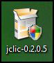
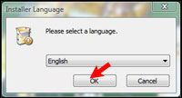
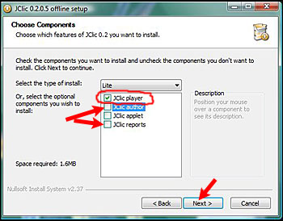
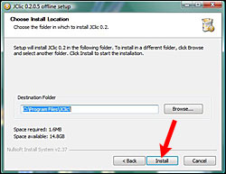
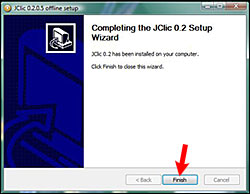
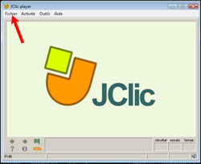

Une fois téléchargé, vous lancez l'installation en double cliquant sur 
 Une fenêtre s'ouvre : cliquez sur OK
 Désélectionnez JClic author et JClic reports si vous souhaitez simplement utiliser les exercices sur votre ordinateur. JClic player doit rester sélectionné.
 L'installation se fera dans le dossier qui s'affiche. Cliquez sur "Install".
 L'installation est rapide. Cliquez sur 'Finish".
L'installation placera une icône sur le bureau :
 Au lancement de jclic, cliquer sur l'onglet fichier, ouvrir et aller chercher les activités préparées là où vous les avez téléchargées. Le mieux est de les placer par couper/coller dans le dossier "projects" du logiciel (disque C, programme, jclic, projects).
On ne peut pas ouvrir les activités directement. Il faut ouvrir en premier JClic player.
Une fois que les activités ont été ouvertes une première fois, elles sont répertoriées dans l'onglet fichier et numérotées. Il est alors plus simple de les ouvrir directement.
© Copyright by Monique Moizan